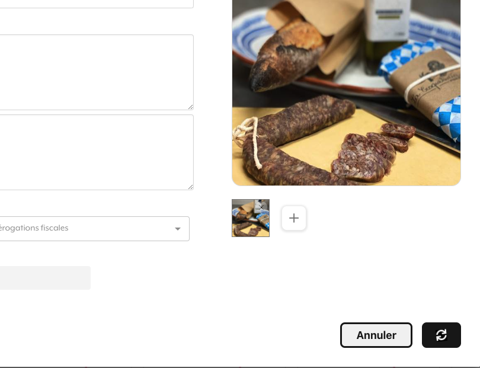

Spinners are important for indicating to the user that an action is in progress.
This gives users confidence that they performed an action correctly.
Spinners should be sized to stay within their containers:
DO: Spinner is an appropriate size for the button.
DON'T: Spinner is too large and changes the button's size. This could be startling to a user.
Shown below is an example of a spinner's placement within the Radish platform.
